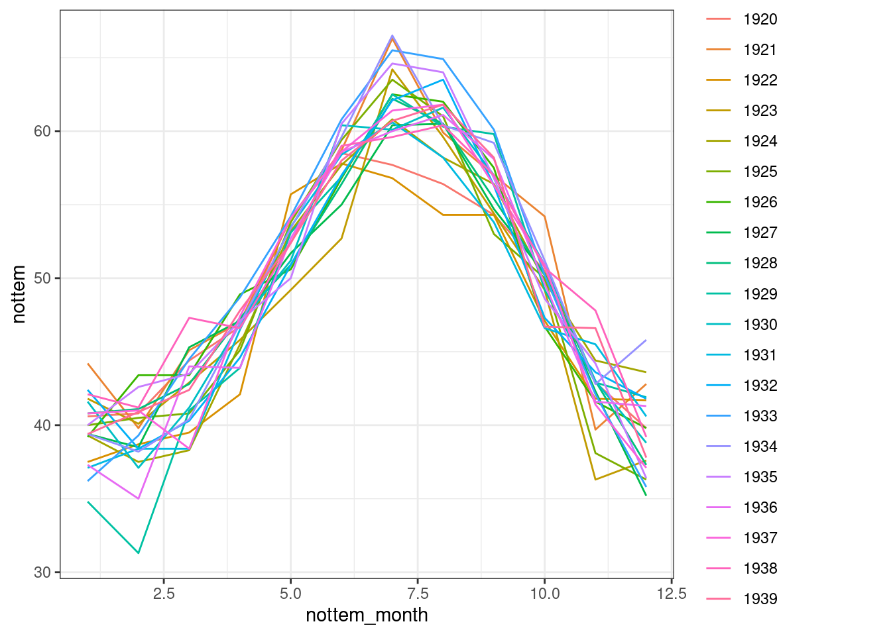
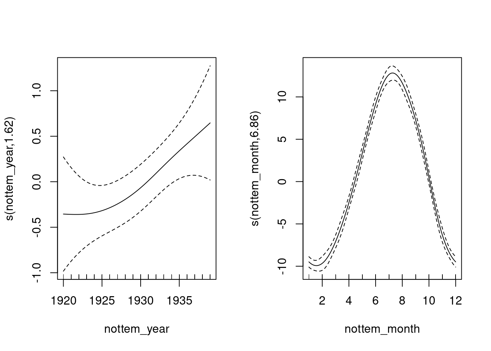

Chapitre 10 Changer la fonction de base
Pour modéliser une surface lisse ou non-linéaire, nous pouvons construire des fonctions lisses de différentes manières:
La fonction de lissage s() modélise un terme lisse 1-dimensionnelle ou une intéraction entre des variables mesurées sur la même échelle. Il s’agit de la fonction de lissage que nous avons utilisée tout au long de cet atelier.
Il y a deux autres fonctions de lissage: te() et ti(), qui peuvent modéliser une surface d’interaction 2- ou n-dimensionnelle. La fonction te() est utile pour modéliser des variables qui ne sont pas sur la même échelle, incluant les surfaces qui comprennent les effets principaux. La fonction ti() est utile pour modéliser des surfaces d’interactions qui ne comprennent pas les effets principaux.
Les fonctions lisses ont beaucoup de paramètres qui changent leur comportement. Les paramètres les plus souvent utilisés sont les suivants :
k: dimensions de base
- Détermine la limite supérieure du nombre de fonctions de base utilisées pour construire la courbe.
- Contraint l’ondulation d’une fonction lisse.
- Le \(k\) devrait être < au nombre de données uniques.
- La complexité (ou la non-linéarité) d’une fonction lisse dans un modèle ajusté est reflétée par ses degrés de liberté effectifs (EDF)
bs: spécifie la fonction de base sous-jacente.
- pour s() on utilise tp (thin plate regression spline) et pour te() et ti() on utilise la base cr (cubic regression spline).
d: spécifie quelles variables d’une intéraction se trouvent sur la même échelle lorsqu’on utilise te() and ti().
- Par exemple, te(Temps, largeur, hauteur, d=c(1,2)), indique que la largeur et la hauteur sont sur la même échelle, mais que temps ne l’est pas.
10.1 Exemple: Données cycliques
Lorsque l’on modélise des données cycliques, on souhaite généralement que le prédicteur soit identique aux deux bouts des phases. Pour y parvenir, nous devons modifier la fonction de base.
Utilisons une série chronologique de données climatiques, divisées en mesures mensuelles, afin de déterminer s’il y a une tendance de température annuelle. Nous utiliserons la série temporelle de la température de Nottingham
pour cela, qui est incluse dans R:
# série temporelle de la température de Nottingham
data(nottem)Voir ?nottem pour plus de détails sur le jeu de données.
Commençons par visualiser les fluctuations mensuelles de température pour chaque année dans le jeu de données nottem:
# nombre d'années de données (20 ans)
n_years <- length(nottem)/12
# codage qualitatif pour les 12 mois de l'année, pour
# chaque année échantillonnée (série de 1 à 12, répétée 20
# fois)
nottem_month <- rep(1:12, times = n_years)
# une variable où l'année correspondant à chaque mois dans
# nottem_month
nottem_year <- rep(1920:(1920 + n_years - 1), each = 12)
# Visualiser la série temporelle
qplot(x = nottem_month, y = nottem, colour = factor(nottem_year),
geom = "line") + theme_bw()
Nous pouvons modéliser le changement cyclique de température à travers les mois et la tendance non-linéaire à travers les années, en utilisant une spline cubique, ou cc pour modéliser les effets de mois ainsi qu’un terme non-linéaire pour la variable année.
year_gam <- gam(nottem ~ s(nottem_year) + s(nottem_month, bs = "cc"),
method = "REML")
summary(year_gam)$s.table## edf Ref.df F p-value
## s(nottem_year) 1.621375 2.011475 2.788093 0.06141004
## s(nottem_month) 6.855132 8.000000 393.119285 0.00000000plot(year_gam, page = 1, scale = 0)
Il y a une augmentation d’environ 1 - 1,5ºC au cours de la série, mais au cours d’une année, il y a une variation d’environ 20ºC. Les données réelles varient autour de ces valeurs prédites et ceci représente donc la variance inexpliquée.
Ici, nous pouvons voir l’un des avantages très intéressants de l’utilisation des GAMs. Nous pouvons soit tracer la surface réponse (valeurs prédites) ou les termes (contribution de chaque covariable) tel qu’indiqué ci-haut. Vous pouvez imaginer ce dernier en tant qu’une illustration de la variation des coefficients de régression et comment leur contribution (ou taille de leur effet) varie au fil du temps. Dans le premier graphique, nous voyons que les contributions positives de la température sont survenues après 1930.
Visualiser les contributions de variables
G. L. Simpson and Anderson (2009) ont modélisé des données paléolimnologiques avec des GAMs (voir Fig.3c), et ont visualisé la contribution (effet) de la température sur la composition des algues dans des lacs pour illustrer que les contributions significatives de la température ont seulement survenu au cours de deux périodes extrêmement froides.
C’est-à-dire, la contribution est importante lorsque les intervalles de confiance n’incluent pas la valeur zéro, ce qu’on voit à environ 300 et 100 ans AVJC dans G. L. Simpson and Anderson (2009).
Cela a permis aux auteurs de non seulement déterminer combien de variance est expliquée par la température au cours des derniers siècles, mais aussi de repérer dans le temps cet effet significatif.
Si cela vous intéresse, le code pour visualiser soit la surface de réponse (type = "response") ou les termes (type = "terms") est disponible ci-dessous. Lorsque les termes sont sélectionnés, vous obtiendrez la même figure que celle ci-dessus.
pred <- predict(year_gam, type = "terms", se = TRUE)
I <- order(nottem_year)
plusCI <- I(pred$fit[, 1] + 1.96 * pred$se[, 1])
minusCI <- I(pred$fit[, 1] - 1.96 * pred$se[, 1])
xx <- c(nottem_year[I], rev(nottem_year[I]))
yy <- c(plusCI[I], rev(minusCI[I]))
plot(xx, yy, type = "n", cex.axis = 1.2, xlab = "Year", ylab = "Temperature")
polygon(xx, yy, col = "light blue", border = "light blue")
lines(nottem_year[I], pred$fit[, 1][I], lty = 1, lwd = 2)
abline(h = 0, lty = 2)